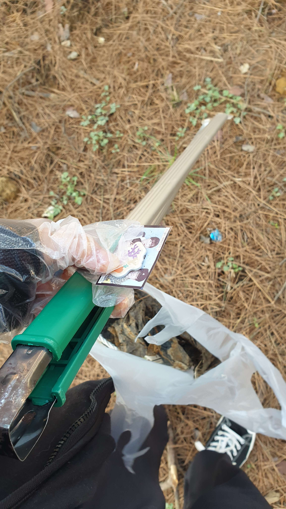
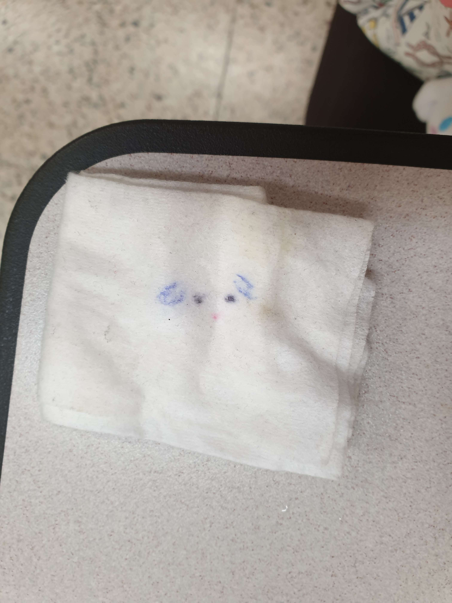
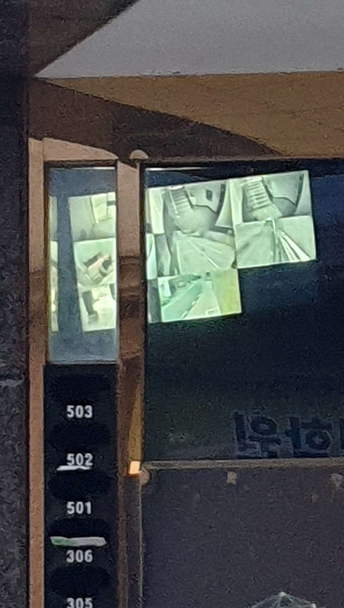
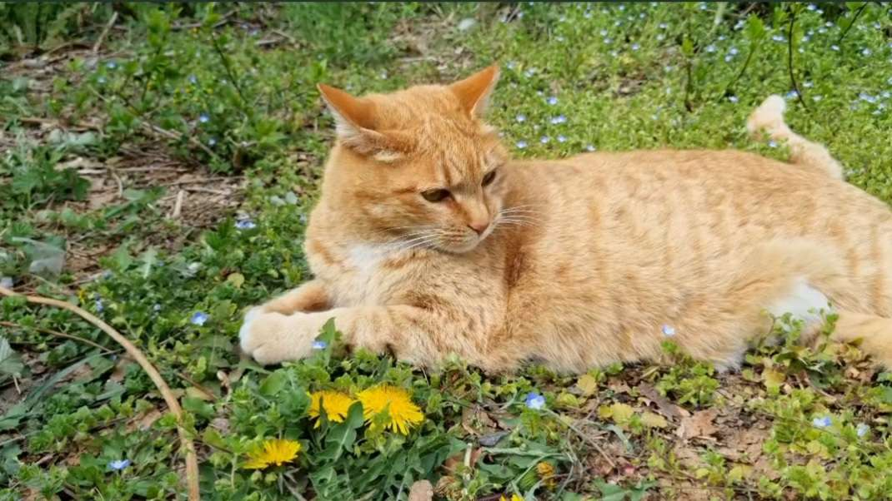
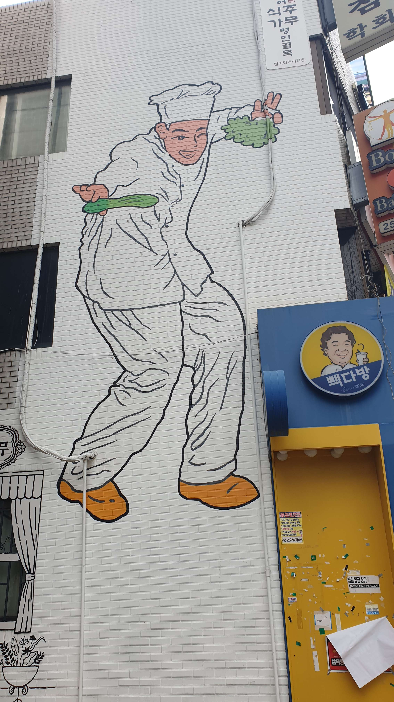
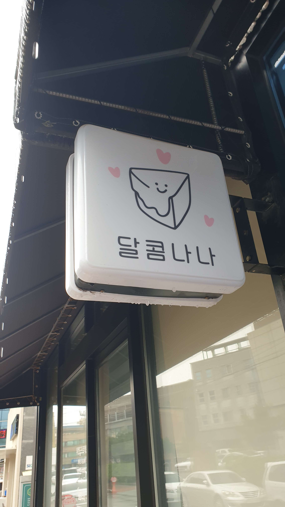

잠이 안와서 새벽 5시까지 그린다

어느 날 밤 갑자기 남자친구를 그려야겠다는 생각이 들었다. 잠이 안와서 그냥 남자친구를 그렸다. 시간이 얼마나 지나갔는지 모르게 벌써 새벽 5시이였다. 나는 어차피 늦게 자는 편인 사람이다. 그리고 나는 밤이 되면 영감을 얻는 편이다. 그래서 자정에 그림을 많이 그렸다.
“좀비 감염 나무”

캠퍼스 주변을 산책하러 가고 있었다. 이 나무의 붉은 가지를 보니 유튜브에서 본 좀비 감염 영상이 생각나게 한다. 인터넷에서는 ‘감염 대체 우주(Infection Alternate Universes)’라는 공포 영상을 제작하는 경향이 있다. 이 영상에서 제작자나 작가는 만화의 기존 캐릭터(마이 리틀 포니, 원신 등)를 가져와 좀비 감염 이야기로 만든다.
흥미로운 “쓰레기”
학교 청소 서비스를 하는 것은 이번이 처음이었다. 청소 서비스는 재미있었다! 쓰레기를 수거하던 중 학생들의 사진을 발견했다. 그들이 너무 중요한 것을 잃지 않았기를 바랍니다.
예술 무역!

내 친구와 나는 미술품 거래를 했다. 이것이 그녀가 나를 위해 그린 것이다. 너무 예쁘고 나랑 닮았다! 예술가 친구도 있다는 건 정말 재미있다. 슬프게도 이 친구는 한국을 떠나야 했기 때문에 이것은 나에게 선물이었다. 그리고 그 대가로 그 사람을 그렸는데 그 사람에 비하면 별로다.
티슈? 아니면 귀여운 얼굴?
가방을 청소하다가 이 티슈를 발견했다. 귀여운 얼굴이 있는 것 같다. 내 가방에 이것을 넣은 사람이 내 여동생이었다는 것을 기억하기 때문에 재미있다. 얼굴이 있었는지 기억이 안 나왔다. 내 여동생이 그걸 그려서 나한테 준 게 틀림없다.
무서운 길

저녁을 먹고 학교에서 집으로 돌아가는 길이다. 밤에는 너무 어둡고 무서워서 좋다. 공포영화가 생각나게 한다. 영화 ‘블레어 마녀 프로젝트’가 생각났다. 조명이 없었다면 훨씬 더 무서웠을 것이다. 내가 공포를 좋아하더라도 솔직히 이 길에 빛이 없었다면 이 길로 가지 않았을 거이다.
“공포 게임”
수업을 마치고 집에 가는 길에 CCTV 영상을 발견했다. 정말 공포게임의 한 장면 같은 느낌이다. 처음 봤을 때 인기 게임 ‘프레디의 피자가게’가 생각났다. 색감이나 분위기는 게임과는 별로 다르지만 CCTV 자체는 호러게임에 나오는 것 같은 느낌이 들었다.
고양이!
우리 캠퍼스에는 고양이가 너무 많다! 나는 고양이를 너무 좋아하고 지금까지 고양이와 이렇게 가까이 있었던 적은 없었다. 고양이를 많이 만나는데 가까이서 사진을 찍고 싶을 때마다 도망갔다.
재미있는 요리사
친구들과 식당으로 가는 길에 우연히 발견한 재미있는 벽화였다. 이 그림에 영감을 준 것이 무엇인지 생각하고 이야기하는 것이 너무 즐거웠다. 그것도 높은 벽화였다.
“달콤나나”
이 표시는 내 옛 룸메이트를 생각나게 한다. 그녀의 이름은 ‘나나’였고 그녀는 “달콤한” 사람이다! 이런 간판이 있어서 놀랐다. 디자인적으로도 너무 귀엽고 간단하다. 슬프게도 카페가 문을 닫고 있었기 때문에 그들이 무엇을 가지고 있는지 확인할 수 없었다.